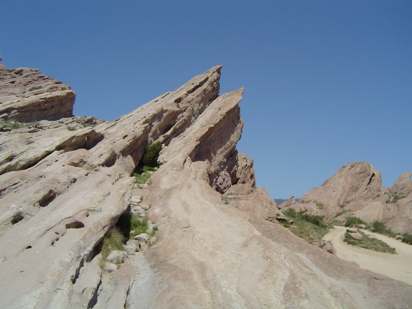
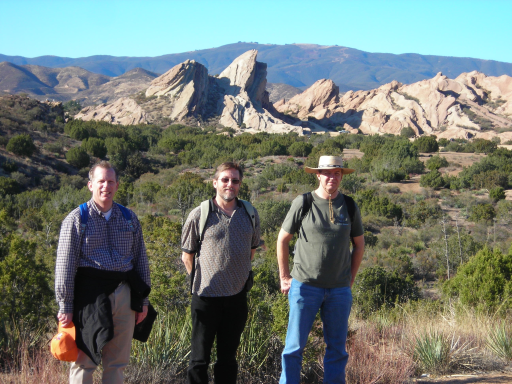
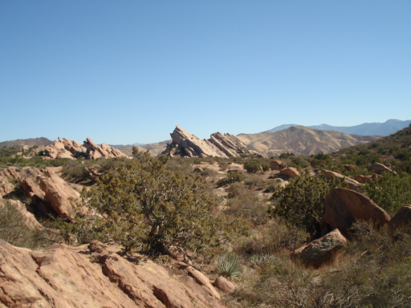
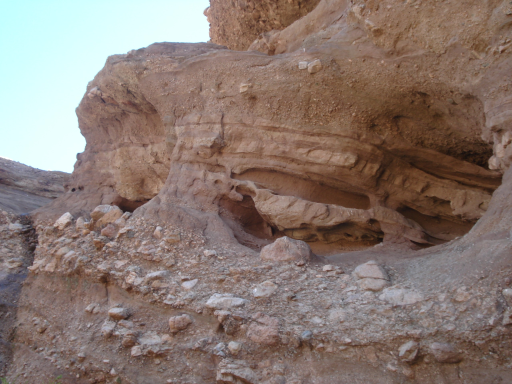
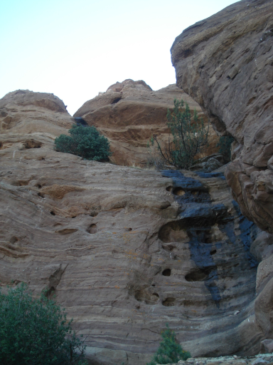
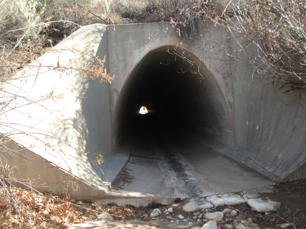
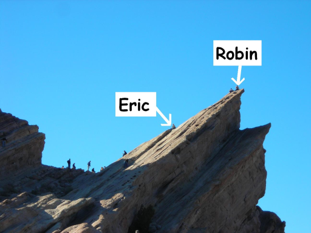

|

On Saturday, Feb 14, Rex, Robin, Don and Eric met to hike Vasquez Rocks.
We hiked to the freeway and under the freeway tunnel.
After exploring the other side of the freeway, we turned back.
The hike was pleasant and very scenic, with only a small elevation change after we left the south side of Vasquez Rocks park.

Vasquez Rocks is known for its amazing rock formations. We were impressed nonetheless.

What was more surprising was the continued good scenery as we approached the freeway.

After leaving the south of the park, we decended into a grotto-like valley of rock. It was shaded and cool, as well as being impressive.

The pleasant scenery and shaded walk continued until we reached the freeway tunnel.
Even it was interesting.
The other side of the tunnel put us back into normal Southern California bush and was pretty barren.
We decided to turn back.

When we got back to the park, Robin and Eric climbed the main rock.
Robin was braver than Eric.

|